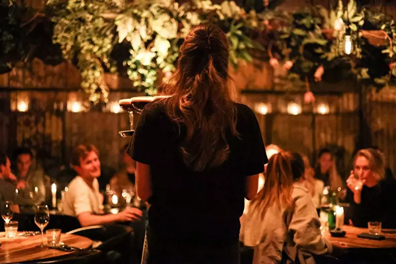
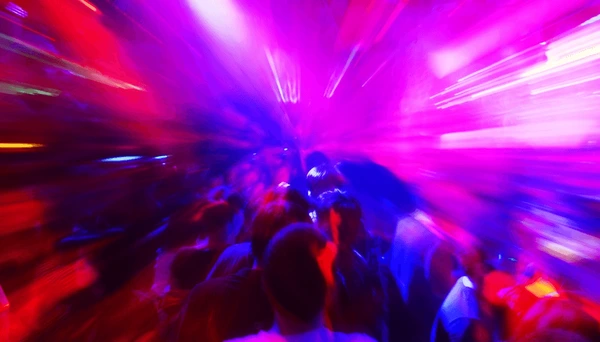

<div class="container">
    <section>
        <div class="mx-auto max-w-7xl px-4 py-16 sm:px-6 lg:px-8 lg:py-20">
            <div class="mb-4">
                <div class="mb-6 text-center sm:text-center md:mx-auto md:mb-12">
                    <p class="text-base font-semibold uppercase tracking-wide">
                        ABOUT
                    </p>
                    <h2 class=" mb-4 font-bold tracking-tight text-5xl">
                        Su di noi.
                    </h2>
                    <div class="mt-10 text-xl text-start" style="line-height: 2.5rem;">
                        <p class="mb-5">Nascosto tra le vie meno conosciute di Piazza G.B. Grassi a Fiumicino, Gab's è
                            un locale
                            unico
                            nel suo genere, nato dall'amicizia di persone che hanno deciso di unire le forze per
                            trasformare
                            un vecchio magazzino di mercato in un vibrante bar & ristorante. Il nome "Gab's" richiama
                            uno
                            stile originale, sicuro di sé, un po' audace, ma sempre autentico. Ed è proprio questo lo
                            spirito che si respira in questo eclettico locale. </p>


                        <p class="mb-5">Il menù è ispirato al mercato, utilizzando solo ingredienti di stagione e pesce
                            sostenibile.
                            Gab's ha un approccio semplice al cibo, cucinato su una griglia a carbone, posizionata al
                            centro
                            della cucina a vista. I sapori sono puliti, semplici e freschi, pensati per essere condivisi
                            su
                            piatti piccoli e grandi. </p>

                        <p class="mb-5"> Il ristorante principale è arricchito da un ampio bar, famoso per i suoi
                            cocktail serviti in
                            caraffa. Il bar più intimo, all'ingresso, è perfetto per bere un drink o festeggiare con
                            gruppi
                            fino a 70 persone.</p>
                    </div>
                </div>
            </div>
        </div>


        <div class="container my-20 text-lg">
            <div class="flex flex-row flex-wrap lg:flex-nowrap">
                <div class="w-full lg:w-1/2 text-center m-3" style="height: 600px;">
                    
                </div>
                <div class="w-full lg:w-1/2 p-10 m-3 bg-base-300 infocard flex flex-col justify-between">
                    <div>
                        <h6 class="mb-0 h6">CE N'È PER TUTTI</h6>
                        <hr class="w-1/3 my-3">
                        <h4 class="h4">CENARE CON UN GRUPPO NUMEROSO? ECCO COME POSSIAMO AIUTARTI!</h4>
                        <p class="my-10">
                            Nella parte posteriore della sala principale, disponiamo di un grande tavolo comune che può
                            ospitare fino a 22 persone. Accanto al tavolo comune, abbiamo 8 tavolini in stile bistrot,
                            ciascuno in grado di accogliere 4 o più ospiti. Al centro della sala principale, è presente
                            un ampio divano con sedie collegate che può ospitare fino a 30 persone.
                        </p>
                    </div>

                </div>
            </div>
        </div>


        <div class="container my-20 text-lg">
            <div class="flex flex-row flex-wrap lg:flex-nowrap">
                <div class="w-full lg:w-1/2 text-center m-3 lg:order-2" style="height: 600px;">
                    
                </div>
                <div class="w-full lg:w-1/2 p-10 m-3 bg-base-300 infocard flex flex-col justify-between">
                    <div>
                        <h6 class="mb-0 h6">È SEMPRE FESTA</h6>
                        <hr class="w-1/3 my-3">
                        <h4 class="h4">FESTEGGIA IL TUO COMPLEANNO O UN COCKTAIL PARTI CON NOI</h4>
                        <p class="my-10">
                            Accanto alla nostra sala da pranzo, disponiamo di un fantastico cocktail bar indipendente,
                            perfetto per eventi fino a 70 persone. Ideale per cene in piedi intime, cocktail party e
                            festeggiamenti di compleanni. Facci sapere se hai desideri particolari.
                        </p>
                    </div>
                    <div><button class="btn btn-lg text-warning rounded-none border-none"
                            (click)="openPDF()">MENU COCKTAILS</button></div>
                </div>
            </div>
        </div>
    </section>
</div>